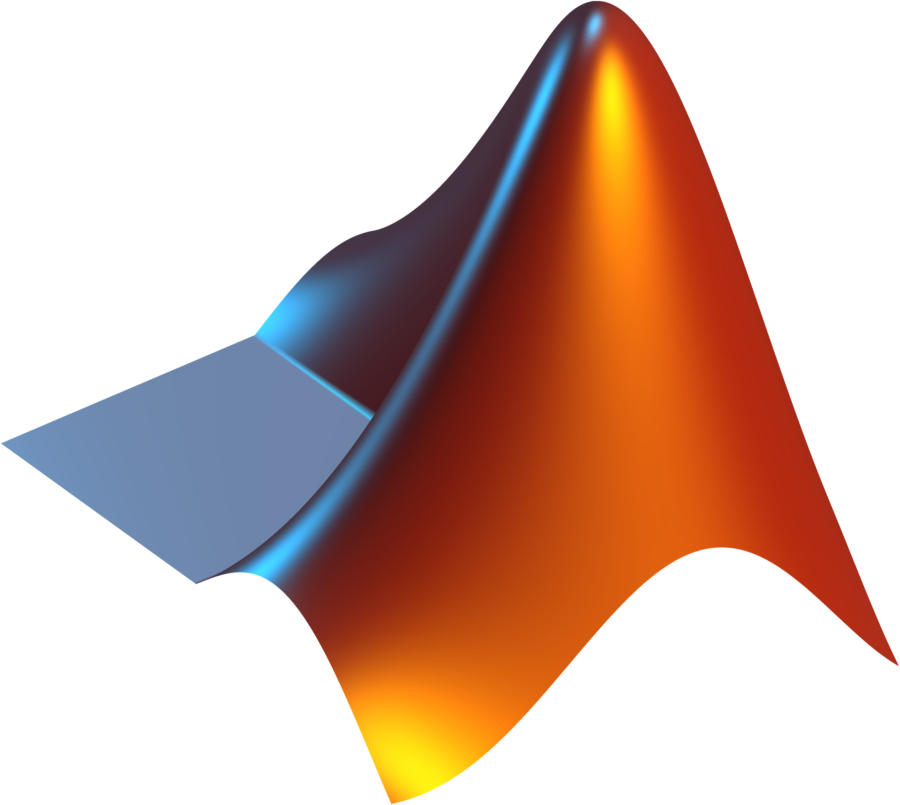

Hitik Kumar Nayak
VLSI Research Portfolio
Electronics & Communication Engineering
Project Assistant — ABV-IIITM Gwalior Graduate Engineer Trainee — MSP Steel
VLSI Research Portfolio
Electronics & Communication Engineering
Project Assistant — ABV-IIITM Gwalior Graduate Engineer Trainee — MSP Steel
I am currently working as Project Assistant at ABV-IIITM Gwalior under MeitY C2S Project. My research focuses on Analog and Mixed Signal VLSI Design including schematic, layout, LVS, DRC, PEX and IO Pad Ring.
Worked on Implantable Pacemaker Chip (iPACE-CHIP). Experienced in Cadence Virtuoso full custom flow including: Schematic Design Layout Implementation DRC & LVS Verification Parasitic Extraction (PEX) IO Pad Ring Design
Hybrid Full Adder Design using LTSpice
Pacemaker Chip (iPACE-CHIP)
Graduate Engineer Trainee — Electrical

6G Frequency Band Analysis

Password Generator & Quiz Game

Shannon Capacity MATLAB Work


Python Programming Internship

Hybrid Full Adder Design
Project Assistant — VLSI
Email: hitikkumarnayak22@gmail.com
GitHub: github.com/hitiknayak
Location: India